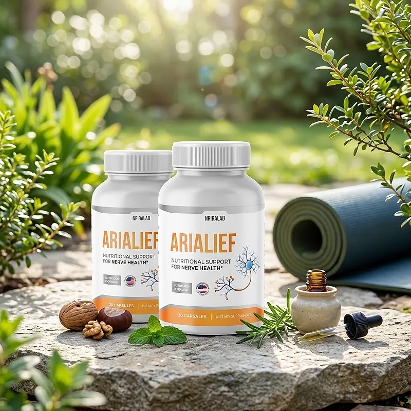
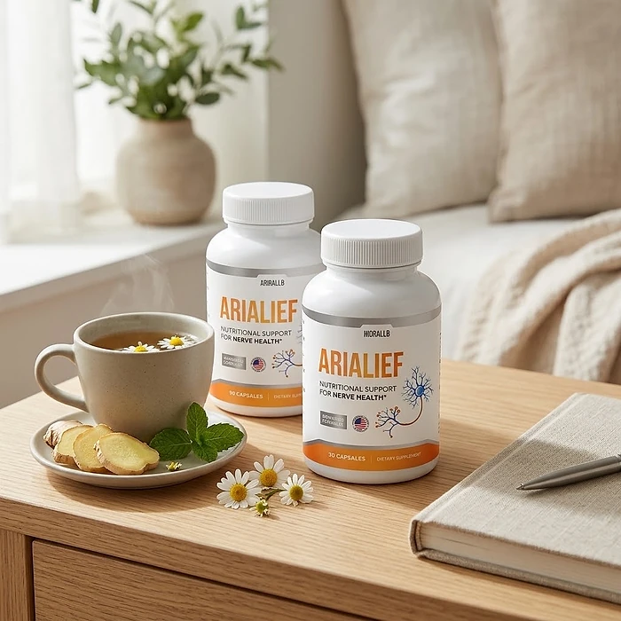

What Is Arialief And How Does It Work?
Arialief is a dietary supplement in vegetable capsule form designed to provide nutritional support for nerve health, everyday comfort, and overall well-being for adults who want to address the tingling, burning, and discomfort in the feet and hands that can build up with age and busy routines through a natural, dependable approach — without complicated protocols or temporary quick fixes.
It utilizes a simple daily capsule that combines Magnesium Glycinate, Alpha Lipoic Acid, Butcher's Broom Root Extract, L-Carnitine, Turmeric Rhizome Extract, and Coenzyme Q10 to support healthy nerve function, circulation, and cellular energy, helping the body maintain its natural balance throughout the day.
The ingredients in Arialief are a mineral, antioxidants, an amino acid, and botanical extracts that, according to the label, form an advanced formula of nutritional support for nerve health, particularly for adults who prefer one small capsule a day over multiple products or complicated plans.
Rather than acting as a short-lived artificial fix, Arialief focuses on nourishing and supporting proper nerve function, as the official FAQ puts it, working gradually alongside daily routines to help maintain comfort, mobility, and long-term wellness.
With consistent daily use, a formula of this kind is intended to help with less nerve discomfort, better sleep and energy, and a gradual sense of well-being, especially when combined with gentle movement, a balanced diet, good foot care, and regular check-ups.
From a practical standpoint, Arialief is a daily nerve support capsule designed to support wellness from within — helping you feel more comfortable, stay active, and remain in control of your health.
Manufactured in the USA, according to the label, and produced at the company's facility in Aurora, Colorado, according to the official FAQ, Arialief is designed for regular daily use, focusing on safety, purity, and quality for those seeking a natural, non-prescription route to nerve wellness.
Arialief Ingredients
Every capsule of Arialief provides 80 mg of Magnesium (as Magnesium Glycinate), 19% of the Daily Value, plus a 575 mg proprietary blend, as listed on the Supplement Facts panel. These are the ingredients of the blend:
Magnesium Glycinate: A gentle, well-absorbed form of magnesium that supports normal nerve and muscle function.
Alpha Lipoic Acid: A powerful antioxidant widely studied for its role in supporting nerve health.
Butcher's Broom (Ruscus aculeatus) Root Extract: A traditional botanical that supports healthy circulation in the legs.
L-Carnitine: An amino acid compound that supports cellular energy production.
Turmeric (Curcuma longa) Rhizome Extract, 95% Curcuminoids: A standardized extract that supports a healthy inflammatory response.
Coenzyme Q10 (as Ubiquinone): A nutrient that supports energy at the cellular level and antioxidant protection.
Together, these ingredients are designed to support nerve health, circulation, and energy from within. The other ingredients are hypromellose (vegetable capsule), microcrystalline cellulose, magnesium stearate, stearic acid, and silicon dioxide. One observation for careful readers: the official FAQ calls palmitoylethanolamide (PEA) the key ingredient, but PEA does not appear on the Supplement Facts panel, so the label is the reference to trust.
Arialief is designed for daily use, offering a natural, non-prescription approach to supporting nerve wellness, without stimulants or complicated routines.
Arialief Side Effects
Arialief is generally considered well tolerated and is designed for adults of different ages and lifestyles who are looking for a safe, natural, and balanced approach to nerve wellness, especially those who prefer an easy one-capsule daily routine to support comfort, circulation, and energy without resorting to risky solutions with severe side effects.
The official website describes the formula as made with carefully selected ingredients recognized for their safety in daily use, and Arialief is manufactured in the USA, according to the label, in vegetable capsules, reinforcing consistency, safety, and reliability.
With no widespread reports of serious side effects, Arialief is generally considered a well-tolerated option. A few points deserve attention: alpha lipoic acid can lower blood sugar, so people who take medication for blood sugar should talk to a doctor first; turmeric may interact with blood thinners; and magnesium can cause mild stomach upset in sensitive people. Numbness or burning in the feet should always be evaluated by a doctor, especially in people with diabetes. It is not intended to diagnose, treat, cure, or prevent any disease, and individual results may vary.
According to the label, it is not for use by those under the age of 18 or by pregnant or nursing mothers, and anyone taking medication or with a medical condition should consult a physician first. The official FAQ also suggests taking it 30 minutes apart from other medications, ensuring it fits safely within your personal wellness plan.
Arialief Dosage
The recommended Arialief dosage is one capsule a day, as printed on the label, and it is designed to fit easily into a daily routine, making consistency simple and convenient. Formulated as a small, easy-to-swallow vegetable capsule, it requires no powders to mix, no drinks to prepare, and nothing to measure.
The official FAQ says you can take it either in the morning or at night, whatever works best for your routine, at the same time each day, which allows its ingredients to work consistently.
For best results, consistency is key. Each bottle contains 30 capsules, a one-month supply, and because nerve support builds gradually, the official FAQ says most people need 3 to 6 months for the best results and recommends at least 4 to 6 months.
There is no need for complex schedules or multi-step routines. One simple daily capsule is designed to build lasting support gradually alongside gentle exercise, a balanced diet, and good sleep. The label advises storing the bottle in a cool, dry place below 86°F (30°C), and the FAQ recommends using it within 24 months of the date of manufacture.
As with any dietary supplement, it's important not to exceed the recommended dose and to check the label on your bottle. Arialief works best when used regularly, combined with proper hydration, balanced nutrition, and healthy daily habits.
Arialief – Refund Policy
You can order Arialief knowing that every purchase is covered by a 60-Day Satisfaction Promise, counted from the delivery date according to the refund policy. This allows you to try the formula and decide if it delivers the support you expect.
According to the refund policy on the official website, you contact support within 60 days of delivery with the subject "Refund Request – Order #", receive a Refund Form to get a Return Merchandise Authorization (RMA) code, and ship all bottles, empty or unopened, plus any bonuses, within 7 days of receiving the RMA, with the packing slip and the RMA code on the label.
How the refund process works: Returns go to Arialief (C/O Fulfillment), 19655 E 35th Drive, Suite 100, Aurora, CO 80011. Return shipping is paid by the customer, shipping and handling are not refunded, and approved refunds are subject to a processing fee of up to 20% of the order value. The policy also mentions an optional partial refund without returning the product.
Customer Support Contact Information: support@arialief.com, which the contact page describes as the official support channel; the FAQ also lists the phone number (844) 361-1273. Order questions can also be sent to BuyGoods, the retailer.
Refund Processing Time: Refunds are issued to the original payment method after the return is received and inspected, and the time for the amount to appear depends on your bank.
This refund policy has more steps and fees than most, so it is worth reading it in full on the official website before ordering Arialief.
Arialief Customer Reviews
-
James P. — CaliforniaVerified Purchase – 6 Bottles
“I’ve been struggling with nerve discomfort for years, and Arialief made a huge difference. After just a few days, I started feeling relief. My energy levels are up, and I feel more like myself again. I highly recommend this product to anyone dealing with similar issues.”
-
Susan T. — New YorkVerified Purchase – 6 Bottles
“Arialief has been a game-changer for me. I was skeptical at first, but now I’m able to do the things I love without being held back by discomfort. My sleep has improved, and I wake up feeling refreshed. Arialief truly works!”
-
Michael R. — TexasVerified Purchase – 6 Bottles
“For years, I searched for something to help with my nerve health. Arialief was recommended to me, and it didn’t disappoint. I noticed improvements within the first week, and now I feel stronger and more capable. Thank you, Arialief, for giving me my life back.”
Arialief – Where To Buy
Arialief is sold through its official website, so if you decide to try it, it's important to be careful about where you purchase it. The official website is the only sales channel the manufacturer lists, and it does not point to marketplaces such as Amazon, eBay, or Walmart.
Listings on third-party platforms may look similar but cannot be verified as authentic, raising concerns about safety, quality, and ingredient freshness. Products purchased outside the official source may not be covered by the 60-Day Satisfaction Promise.
For this reason, it makes sense to purchase Arialief only through the official website. Buying directly from the official source ensures you receive the authentic original product, made in the USA, with access to customer support and the full guarantee. According to the official website, every order is a one-time purchase, with no subscription or auto-ship, and orders are processed by BuyGoods, the retailer named on the site.
To avoid counterfeit batches and ensure maximum quality, always verify that you are ordering from the official Arialief website before completing your purchase.
To ensure you’re getting the authentic product, most users choose to visit the official website.
Is Arialief A Scam?
Based on what the official website and the product label disclose, Arialief does not appear to be a scam. It is a real capsule supplement, sold through an established retailer, and formulated to provide nutritional support for nerve health as part of a consistent routine.
The ingredients used in Arialief — Magnesium Glycinate, Alpha Lipoic Acid, Butcher's Broom Root Extract, L-Carnitine, Turmeric Rhizome Extract, and Coenzyme Q10 — are well known in the wellness field, and the label publishes a Supplement Facts panel with the magnesium dose and the total amount of the blend for transparency.
In addition to its formula, Arialief is manufactured in the USA, according to the label, which identifies the distributor and a support email, and the official FAQ names the facility in Aurora, Colorado, with a focus on safety, purity, and consistency.
The customers quoted on the official website describe less discomfort, better sleep, and more energy. A fair point of criticism is that the FAQ makes strong claims about neuropathy and names an ingredient (PEA) that is not on the label, and that the refund policy includes an RMA process and a processing fee of up to 20%. Results vary from person to person, and no supplement replaces a medical evaluation for persistent nerve symptoms.
Arialief is backed by a 60-Day Satisfaction Promise, and orders are one-time purchases with no subscription or auto-shipment. The refund steps and the return address are published on the official website, which gives customers a clear path if the product does not meet their expectations.
If you're looking for a simple daily capsule to support nerve health, comfort, and well-being without complicated routines, Arialief is worth considering — especially when purchased directly from the official website.
For those who want to verify product details or check current availability, the official Arialief website remains the safest option.

Check Availability On Official Website